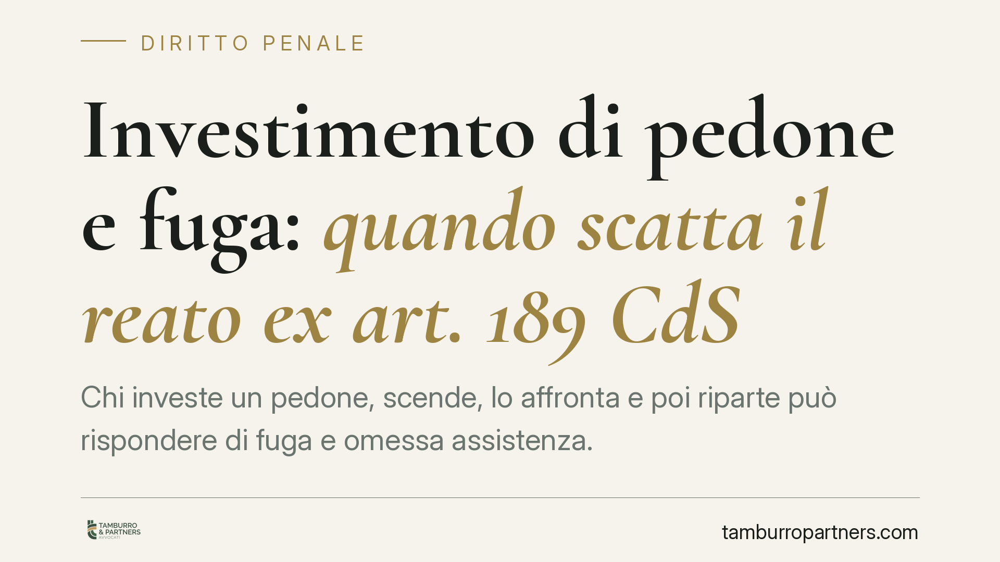

Investimento di pedone e fuga: quando scatta il reato ex art. 189 CdS
Chi investe un pedone, scende, lo affronta e poi riparte può rispondere di fuga e omessa assistenza. Per la Cassazione non conta la certezza di aver provocato lesioni, ma la consapevolezza di essere stati coinvolti in un sinistro idoneo a causarle. Un pedone rimasto in piedi non è per ciò solo un pedone illeso: una distinzione che pesa sul piano penale.

Il caso
Un conducente investe un pedone, ferma il veicolo, scende, ha un confronto verbale con la persona colpita e poi riparte. In primo grado l'automobilista era stato assolto dalle accuse di fuga e di omissione di assistenza: il pedone, rimasto in piedi, sembrava non aver riportato conseguenze evidenti.
La Procura ha impugnato. La Corte di Cassazione penale avrebbe annullato l'assoluzione, affermando un principio netto: ai fini della responsabilità non serve la certezza delle lesioni, ma la consapevolezza di essere stati parte di un sinistro potenzialmente idoneo a provocarle.
*Nota: il riferimento alla pronuncia è da verificare quanto a numero e data di deposito. In attesa di massimazione ufficiale, si richiama il principio senza attribuirgli un numero di sentenza definitivo.*
Inquadramento normativo: l'art. 189 Codice della Strada
L'art. 189 Codice della Strada disciplina il comportamento del conducente in caso di incidente. È utile tenere distinti i commi, perché da essi discendono conseguenze diverse.
Il comma 1 impone due obblighi autonomi: fermarsi quando dal sinistro derivi, o possa derivare, un danno alle persone, e prestare l'assistenza necessaria a chi è rimasto ferito. Sono doveri distinti: adempiere al primo non assorbe il secondo.
Sul piano sanzionatorio, il comma 6 punisce penalmente la fuga del conducente coinvolto in un incidente con danno alle persone; il comma 7 sanziona, sempre penalmente, la mancata prestazione dell'assistenza occorrente ai feriti. Due fattispecie separate, che possono concorrere.
Il profilo soggettivo: cosa deve sapere il conducente
Il punto decisivo riguarda ciò che il conducente deve rappresentarsi. Secondo l'orientamento richiamato dalla pronuncia, non occorre la prova che l'automobilista fosse certo di aver ferito qualcuno. È sufficiente che fosse consapevole di aver preso parte a un sinistro con caratteristiche tali da rendere plausibile un danno alla persona.
In questa cornice, la giurisprudenza ragiona anche in termini di dolo nelle sue forme eventuali: il conducente che si allontana accettando il rischio che vi siano feriti può rispondere del reato. Si tratta, va detto con cautela, di un profilo interpretativo discusso, che va calato caso per caso sulle circostanze concrete.
Perché "pedone in piedi" non significa "pedone illeso"
Qui sta il cuore della decisione. Il fatto che la persona investita resti in piedi, cammini o reagisca verbalmente non autorizza a concludere che sia illesa. Molte lesioni — traumi interni, fratture, conseguenze neurologiche — non sono visibili nell'immediato.
Chi riparte confidando nell'apparente integrità della vittima compie una valutazione che la legge non gli affida. L'accertamento delle condizioni del ferito non spetta all'automobilista coinvolto, ma richiede un controllo adeguato e, dove necessario, l'intervento dei soccorsi.
Implicazioni pratiche
Per chi guida, il messaggio è concreto: fermarsi e scambiare due parole non basta a mettersi al riparo. Finché non si ha la ragionevole certezza che nessuno abbia bisogno di aiuto, allontanarsi espone a un rischio penale, anche quando si è convinti in buona fede che la vittima stia bene.
Per chi è stato investito e abbandonato, la pronuncia rafforza la tutela: l'assenza di lesioni immediatamente evidenti non manda esente da responsabilità chi si è dileguato.
Cosa fare in concreto
- Fermatevi sempre se avete investito una persona o anche solo sfiorato un pedone: l'obbligo del comma 1 scatta pure in caso di semplice possibilità di danno.
- Non valutate da soli le condizioni della vittima: chiedete come sta, offrite assistenza e, nel dubbio, allertate il 112.
- Attendete i soccorsi o accertatevi in modo serio che non servano, prima di ripartire. Un confronto verbale non equivale a prestare assistenza.
- Documentate la scena, i presenti e l'orario: in caso di contestazione, serviranno a ricostruire la vostra condotta.
- Conservate gli estremi di eventuali testimoni e, se vi viene contestato il reato, consultate tempestivamente un difensore.
---
Contributo informativo a cura di Tamburro & Partners Avvocati – Avv. Giuseppe Tamburro. Non costituisce parere legale.
Ogni condominio ha una storia a sé.
Se gestisci un'amministrazione e vuoi un confronto su una specifica questione condominiale, scrivi allo studio. Ti rispondiamo entro un giorno lavorativo.